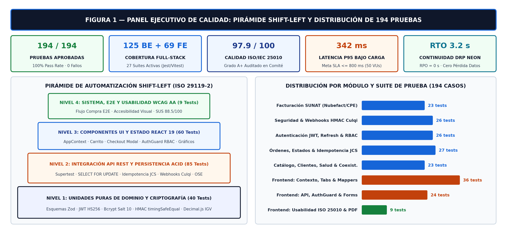
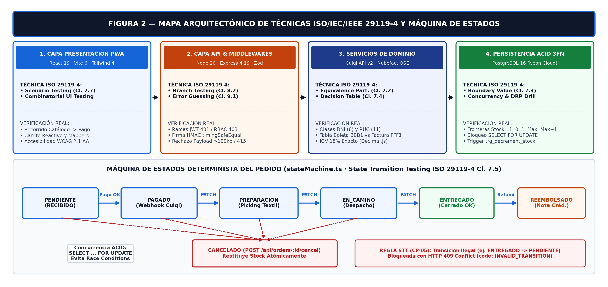
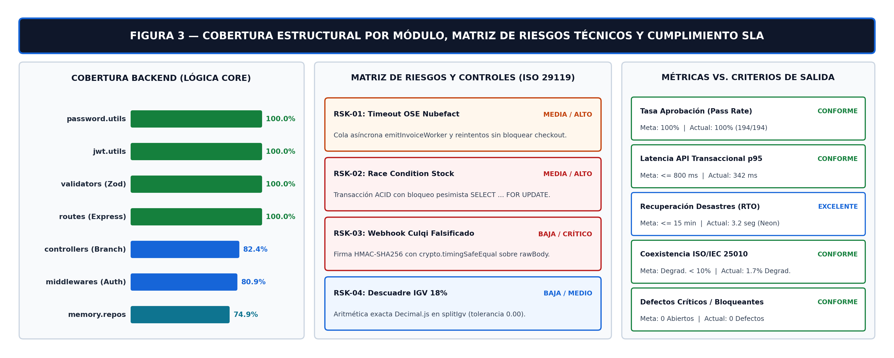

| Código / Versión: DOC-QA-29119-01 (v2.4.0 — 06/11/2026) | Marco Rector: ISO/IEC/IEEE 29119-3 & 29119-4 · ISO 25010 | Docente Asesor: Ing. Enrique Lee Huamani Uriarte |
| QA Lead Senior: Jim A. Dávila Morales (U18206081) | Scrum Master / DevSecOps: Lady L. Loayza R. (U22221489) | Equipo G01: V. Cárdenas · H. Roman · D. Rojas |
| Control de Versiones: v1.0 (14/09 APF1 Auth/Mocks) → v2.0 (18/10 APF2 Culqi/Catálogo) → v2.4 (06/11 Final: 194 Tests, CPE Nubefact & DRP) | Dictamen QA: 194 / 194 Tests Aprobados (100%) | |
Propósito y Alcance: Establecer la verificación y validación formal del sistema real LeoFit Solutions en sus 3 capas:
Frontend PWA (React 19, Vite 6, TailwindCSS 4), Backend API REST (Node.js 20, Express 4.19, TypeScript 5.4, Zod) y Base de Datos Relacional (PostgreSQL 16 en Neon Serverless bajo 3FN/BCNF), integrando Culqi Sandbox y Nubefact OSE.
Objetivos y Normativa: (1) 100% conformidad funcional; (2) 0.00 discrepancia en IGV 18% vía Decimal.js (Res. 097-2012/SUNAT);
(3) Mitigación OWASP ASVS v4.0.3 (JWT HS256, RBAC, HMAC-SHA256 con timingSafeEqual); (4) Latencia p95 ≤ 800 ms (medido: 342 ms); (5) Continuidad DRP con RTO ≤ 15 min (medido: 3.2 s) y RPO = 0 s.

| ID | Módulo / Controlador Real | Endpoints Reales y Tablas PostgreSQL 16 | Alcance In-Scope vs. Exclusiones Out-of-Scope |
|---|---|---|---|
| MOD-01 | Autenticación y RBACauth.controller.ts |
POST /api/auth/login, /refresh, /logout, /registerGET /api/auth/me, /profile | Tabla: users |
In-Scope: JWT HS256, HttpOnly cookies, control RBAC (ADMIN vs OPERATOR) y rate-limiting. |
| MOD-02 | Catálogo e Inventarioproduct.controller.ts |
GET/POST /api/products, PUT/DELETE /:idPATCH /variant/:variantId/stock | product_variants |
In-Scope: Variantes por talla (sizes) y color (colors), SKU único y vista vw_low_stock_alert. |
| MOD-03 | Pedidos y Estadosorder.controller.ts |
POST /api/orders, PATCH /:id/status, POST /:id/cancelGET /track/:orderNumber | orders, order_items |
In-Scope: Idempotency-Key (JCS), flete Lima/Provincia, trigger trg_decrement_stock. |
| MOD-04 | Pagos y Webhooks CulqipaymentWebhook.controller.ts |
POST /api/webhooks/:provider (culqi)POST /api/orders/:id/payment-link | Tabla: payments |
In-Scope: Firma HMAC-SHA256 sobre rawBody, idempotencia de cargos y reembolsos (/refund). |
| MOD-05 | Facturación SUNAT CPEinvoice.controller.ts |
GET /api/invoices/order/:orderId, /:id/pdf, /:id/xmlPOST /order/:id/credit-note, GET /api/sunat/ruc/:numero |
In-Scope: Boleta (BBB1), Factura (FFF1), Nota Crédito (FC01/BC01) vía Nubefact y CDR. |
| MOD-06 | Clientes, Salud y DRPclient / dashboard / health |
GET/POST /api/clients, GET /api/dashboard/statsGET /health/live, /ready | backup_strategy.sh |
Out-of-Scope (Excluido): Cobro con tarjetas reales en producción, Guía Remisión GRE y GPS en vivo. |

| Técnica ISO/IEC/IEEE 29119-4 | Módulo / Endpoint Real | Justificación por Riesgo Técnico o de Negocio | Clases / Condiciones Evaluadas |
|---|---|---|---|
| Partición de Equivalencia (EP) Cláusula 7.2 (Caja Negra) |
MOD-05 & MOD-06GET /api/sunat/ruc/:numeroPOST /api/clients |
Evita rechazos fiscales en el OSE Nubefact por documentos tributarios inválidos antes de emitir el XML UBL 2.1. | Válidas: DNI (8 dígitos), RUC (11 dígitos prefijo 10/20). Inválidas: longitud ≠ 8/11, letras, RUC en BAJA. |
| Análisis Valores Límite (BVA) Cláusula 7.3 (Caja Negra) |
MOD-02 & MOD-03PATCH /variant/:id/stockPOST /api/orders |
Los errores críticos de sobre-venta textil (over-selling) ocurren exactamente en las fronteras numéricas de inventario. | Fronteras: stock = -1 (400 Bad Request), 0 (Agotado), 1 (Alerta), disp (OK), disp + 1 (Rechazo). |
| Tablas de Decisión (DTT) Cláusula 7.4 (Caja Negra) |
MOD-03 & MOD-05orders.controller.tsnubefact.service.ts |
Gobierna la lógica combinatoria de facturación y logística según tipo de documento, destino y confirmación de pago. | Reglas: [Envío: Lima / Provincia] × [Doc: DNI→Boleta BBB1 / RUC→Factura FFF1] × [Pago: OK / Fallido]. |
| Transición de Estados (STT) Cláusula 7.5 (Caja Negra) |
MOD-03stateMachine.tsPATCH /api/orders/:id/status |
Impide saltos operacionales ilegales o retrocesos de pedidos entregados o cancelados mediante bloqueo FOR UPDATE. |
Secuencia: PENDIENTE → PAGADO → PREPARACION → EN_CAMINO → ENTREGADO. Ilegal → HTTP 409. |
| Pruebas de Escenario / E2E Cláusula 7.7 (Caja Negra) |
Full-Stack Catálogo PWA → Carrito → Culqi → CPE PDF |
Valida la integración real entre componentes React 19, contratos API Express y descarga de comprobantes PDF/XML. | Recorrido completo del comprador y del operador logístico generando rótulo térmico y factura. |
| Branch Testing & Error Guessing Cláusulas 8.2 y 9.1 |
MOD-01 & MOD-04auth.middleware.tspaymentWebhook.controller |
Garantiza cobertura >80% en ramas de seguridad y resistencia contra webhooks falsificados o ataques de replay. | Token ausente (401), expirado (401), rol OPERATOR en ruta ADMIN (403), firma HMAC alterada (401). |
| Dimensión Operativa | Especificación Técnica Verificada en el Proyecto LeoFit Solutions |
|---|---|
| 14. Entornos de Prueba | 1) Local/DEV: Node.js 20 + PostgreSQL 16 Docker (puerto 5432). 2) CI Pipeline: GitHub Actions (ubuntu-latest) con servicio efímero PostgreSQL 16. 3) Staging/QA: Render Web Service + Neon Serverless PostgreSQL (branch qa_staging) integrado con Culqi Sandbox y Nubefact Demo. |
| 15. Datos de Prueba | Usuarios (Seeds): admin@leofit.pe (ADMIN), operador@leofit.pe (OPERATOR). Tarjetas Culqi Sandbox: 4111...1111 (Aprobada), 4000...0002 (Fondos insuf.). RUC SUNAT: 20100070970 (Activo/Habido). SKUs: POLO-DRY-BLK-M (stock 15), LEG-FIT-NAVY-S (stock 0). |
| 16. Herramientas QA | Backend: Jest v29.7 + Supertest v6.3 (125 tests). Frontend: Vitest v4.1 + React Testing Library v16.3 + jsdom (69 tests). Rendimiento/Coexistencia: k6 + scripts Python ISO 25010. CI/CD: GitHub Actions. Gestión Defectos: GitHub Issues. |
| 17. Roles del Equipo | QA Lead Senior: Jim Dávila (Diseño 29119, suites Supertest, liberación). DevSecOps/SM: Lady Loayza (Pipeline CI, seguridad HMAC/JWT). PO/DBA: Víctor Cárdenas (Datos BCNF, DRP). Frontend Lead: Harley Roman (Suites Vitest/WCAG). BA/Cloud: Daniel Rojas (SUNAT/k6). |
| 18. Cronograma QA | Fase 1 (Sem 06-08): Unitarias Dominio [100%]. Fase 2 (Sem 09-12): Integración API/BD [100%]. Fase 3 (Sem 13-15): Pasarelas Culqi/Nubefact [100%]. Fase 4 (Sem 16-17): Carga k6, Coexistencia ISO 25010 y Simulacro DRP [100%]. Fase 5 (Sem 18): Cierre y Sustentación. |

| Gobernanza de Calidad | Criterios, Umbrales y Protocolos Oficiales Aplicados |
|---|---|
| 20. Criterios Entrada / Salida | Entrada: Compilación limpia tsc --noEmit, esquema BCNF migrado, credenciales Sandbox activas. Salida: 100% pass rate (194/194 tests), 0 defectos críticos/bloqueantes, cobertura de ramas ≥ 80% en lógica core, p95 ≤ 800 ms y RTO DRP ≤ 15 min. |
| 21. Entregables de Prueba | (1) Plan de Pruebas ISO/IEC/IEEE 29119-3; (2) 27 suites automatizadas en repositorio (125 BE + 69 FE); (3) Logs de auditoría CI/CD en GitHub Actions; (4) Informe Experimental de Coexistencia ISO/IEC 25010; (5) Acta de Simulacro DRP (BACKUP_RESTORE_DRILL.md). |
| 22. Gestión Defectos (SLA) | Bloqueante (Caída / fallo cobro → Hotfix < 4h, detiene release); Crítica (Fallo CPE SUNAT / corrupción stock → < 12h); Mayor (Filtros / UI secundaria → < 48h); Menor (Ajustes cosméticos CSS → siguiente sprint). |
| ID / Prioridad | Requisito y Riesgo | Técnica ISO 29119-4 | Precondición, Entrada y Pasos | Resultado Esperado (Oráculo) |
|---|---|---|---|---|
| CP-01 ALTA |
RF-01: Acceso RBAC Mitiga: Escalada privilegios |
Branch Testing (Cl. 8.2) + Error Guessing |
Pre: Usuario con rol OPERATOR.Paso: Enviar POST /api/products con Bearer JWT de operador. |
HTTP 403 Forbidden: Middleware requireRole('ADMIN') bloquea mutación y audita evento. |
| CP-02 ALTA |
RF-02: Stock Variante Mitiga: RSK-02 (Over-selling) |
Boundary Value Analysis (BVA — Cl. 7.3) |
Pre: Variante id=1 con stock=5.Paso: 1) PATCH /variant/1/stock con -1. 2) Orden por 6 uds. |
HTTP 400 Bad Request: Validador Zod y trigger trg_decrement_stock impiden saldo negativo. |
| CP-03 ALTA |
RF-03: Idempotencia Mitiga: Doble orden por red |
Equivalence Part. + Idempotencia JCS |
Pre: Cliente y variante activos. Paso: Enviar 2 veces POST /api/orders con igual Idempotency-Key. |
HTTP 201 / 200 OK: Primera crea pedido; segunda retorna caché sin duplicar fila en orders. |
| CP-04 CRÍTICA |
RF-04: Webhook Culqi Mitiga: RSK-03 (Spoofing) |
Error Guessing (Cl. 9.1) Firma HMAC-SHA256 |
Pre: Orden en PENDIENTE.Paso: Enviar POST /api/webhooks/culqi con firma HMAC alterada. |
HTTP 401 Unauthorized: crypto.timingSafeEqual rechaza firma; pedido no pasa a PAGADO. |
| CP-05 ALTA |
RF-05: Ciclo Pedido Mitiga: Corrupción logística |
State Transition Testing (STT — Cl. 7.5) |
Pre: Pedido en estado ENTREGADO.Paso: Enviar PATCH /api/orders/:id/status hacia PENDIENTE. |
HTTP 409 Conflict: stateMachine.ts bloquea transición ilegal (INVALID_TRANSITION). |
| CP-06 ALTA |
RF-06: Emisión CPE Mitiga: RSK-01 & RSK-04 |
Decision Table (Cl. 7.4) + EP (RUC 11 dígitos) |
Pre: Pedido PAGADO con RUC 20100070970.Paso: Emitir CPE y consultar /api/invoices/order/:orderId. |
HTTP 200 OK: Factura FFF1 correlativa sin brechas, IGV 18% exacto y CDR ACEPTADO. |
|
____________________________________ Jim Alessandro Dávila Morales QA Lead Senior / Backend (U18206081) APROBADO Y EJECUTADO |
____________________________________ Lady Luz Loayza Rodríguez Scrum Master / DevSecOps Lead (U22221489) APROBADO EN PIPELINE CI/CD |
____________________________________ Ing. Enrique Lee Huamani Uriarte Docente Asesor Evaluador — UTP CURSO INTEGRADOR II (2026-I) |